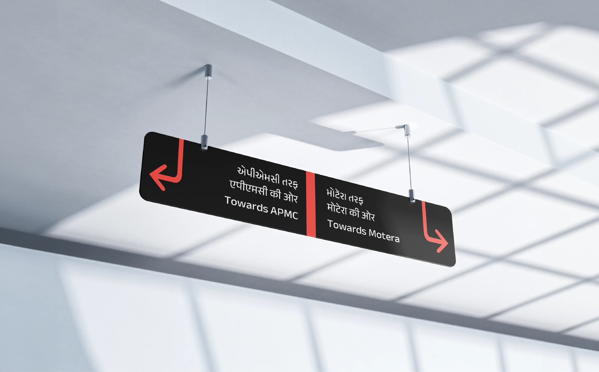
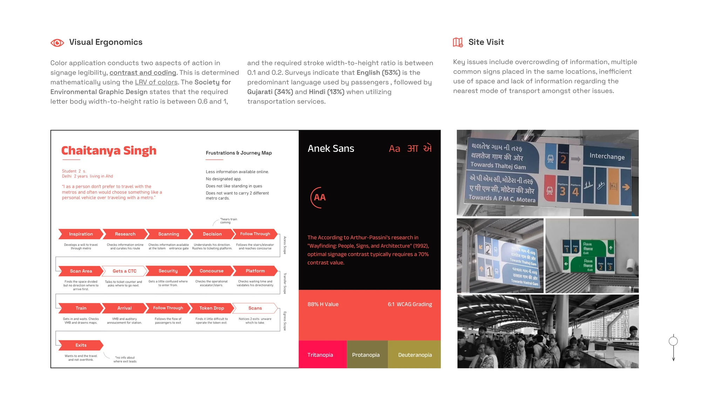
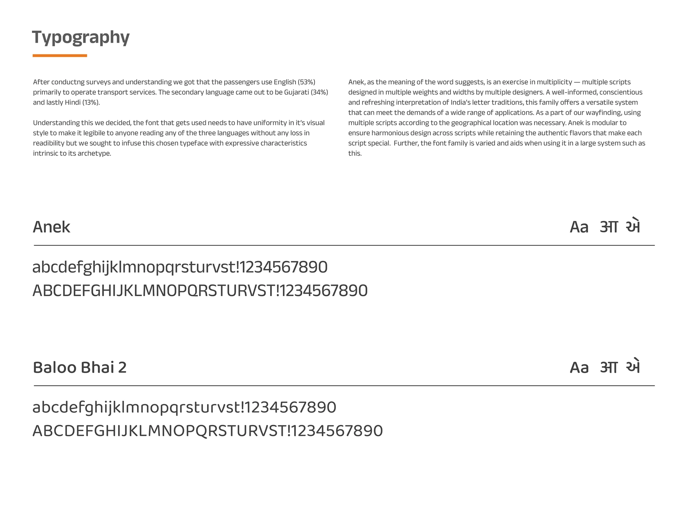
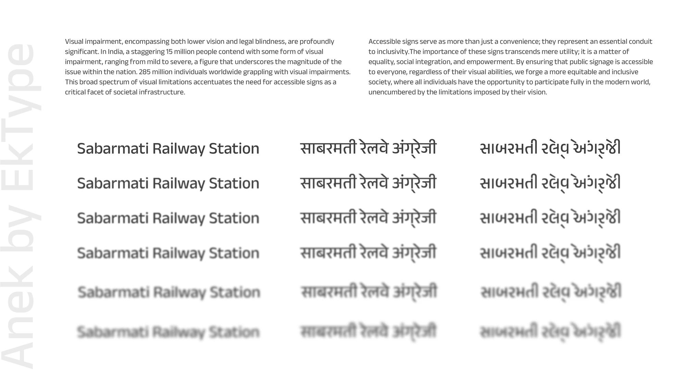
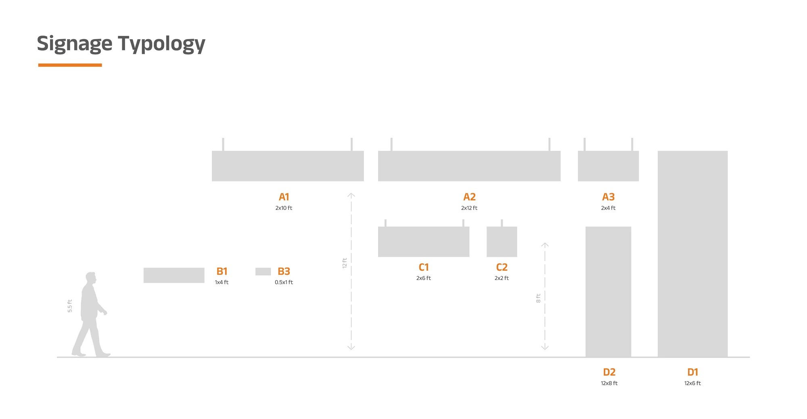
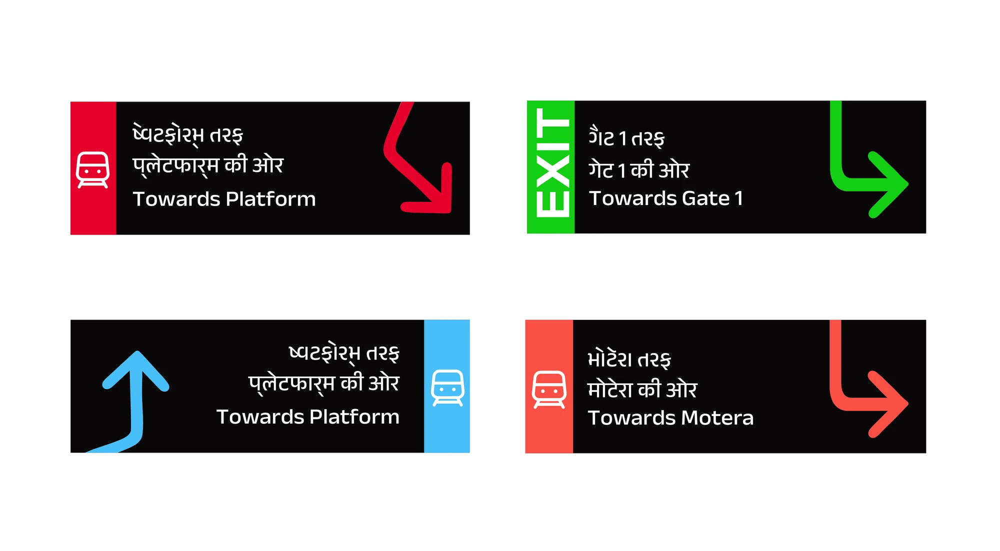
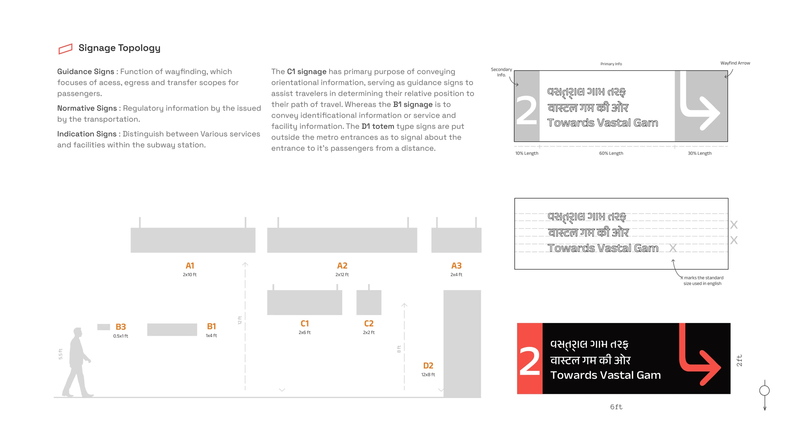
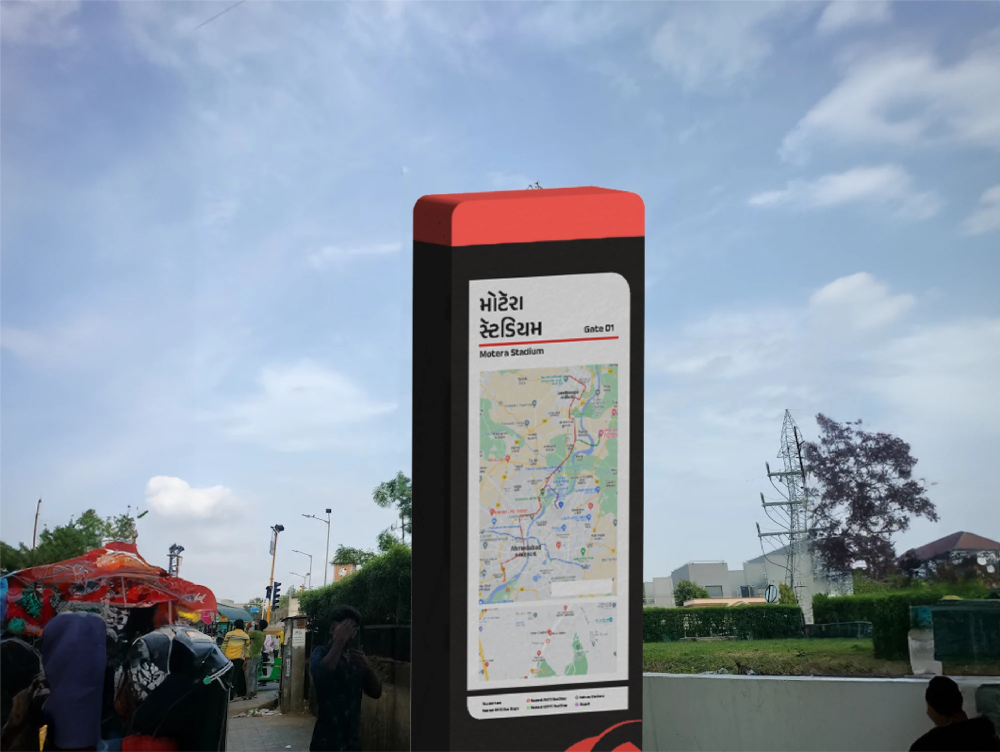
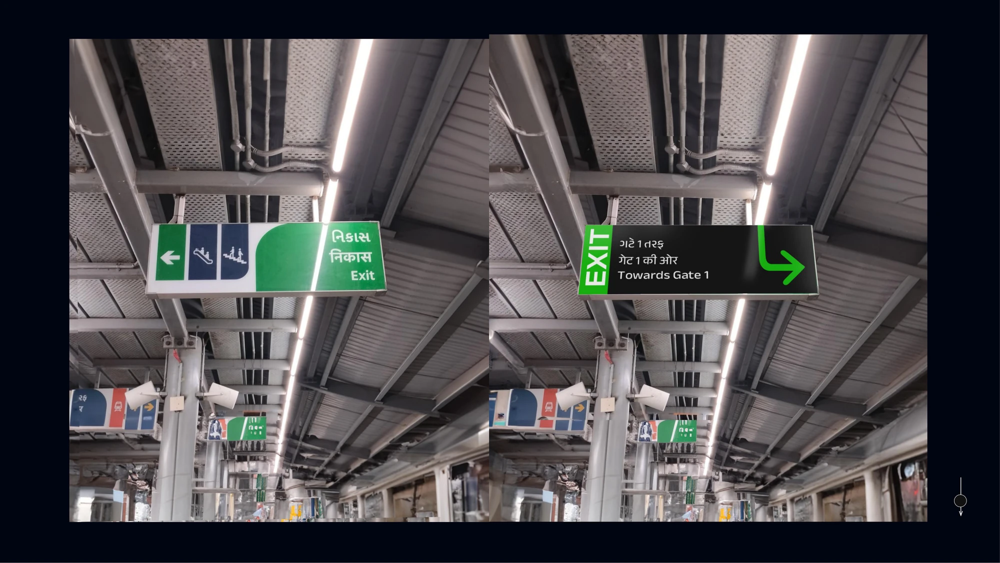
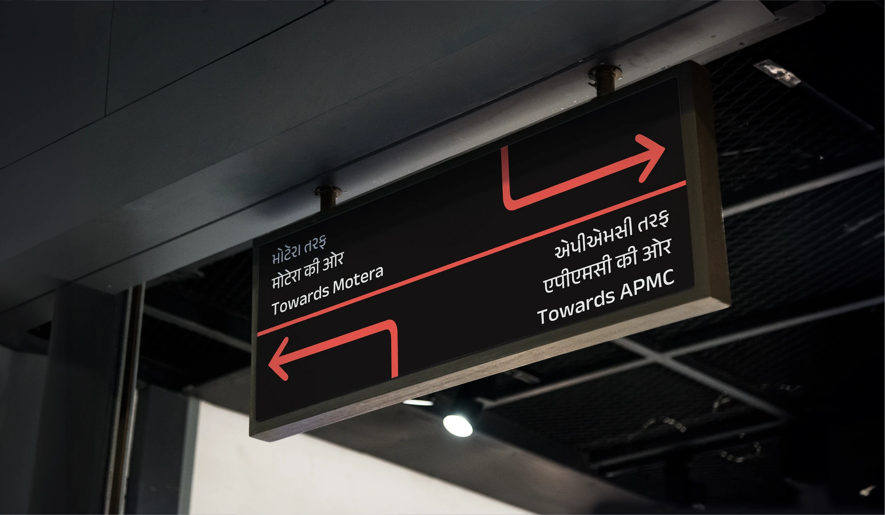

Metro Wayfinding System
A signage system for Ahmedabad Metro, tested with metro officials and commuters. It reached a 6:1 contrast ratio, above the WCAG AA minimum of 4.5:1.

Overview
A system that speaks before you need to ask.
Brief
Ahmedabad Metro's wayfinding and ticketing left riders anxious. This project focused on wayfinding: visual design, signage placement and orientation.
My part
Signage designer, systems researcher, iconographer, service designer and information architect.
Result
A signage system tested with metro officials and commuters, validated for three colour-blindness conditions.
Context
How can you navigate a metro without ever feeling lost?
Ahmedabad Metro by GMRC Limited aims to revolutionize urban transportation. Following extensive studies and site visits, challenges were pinpointed in the wayfinding and ticketing systems. The focus of this project was on enhancing the wayfinding experience through improved visual design, strategic signage placement, and orientation, aiming to minimize user anxiety and streamline navigation.
Signage is graphic communications in the built world, which conveys information from one entity (the external environment) to another (people) in a visual mode. It tells a story as they walk through that space.

Site visit: the existing wayfinding audit.
Research
Three languages drove every typographic and layout decision.
Research began with site visits, footfall mapping, shadowing, and participatory action research. A comparative case study covered metro stations around the world and across India. User journey mapping broke the experience into three scopes: Access Scope, Transfer Scope, and Egress Scope.
Surveys indicated the language riders use most. This multilingual reality drove every typographic and layout decision that followed.
Legibility
Visual ergonomics decided the type.
The typeface chosen was Anek Sans, selected for its native support of Devanagari and Gujarati scripts alongside Latin. Contrast values followed Arthur and Passini's research, targeting 70% contrast for legibility. Letter body width-to-height ratio was maintained between 0.6 and 1.0 across all signage.

Typography: Anek, tested against Baloo Bhai 2.

Legibility under visual impairment: the same line at increasing blur.
The system
Three sign types, sized and colour coded by place.
A color coding system was developed to distinguish sign types. Signage was classified into three categories: Guidance Signs (directional), Normative Signs (regulatory), and Indication Signs (informational).
Physical sign dimensions were specified for each placement context, from A1 (2x10 ft) and A2 (2x12 ft) overhead signs to B1 (1x4 ft) and B3 (0.5x1 ft) counter signs, C1 (2x6 ft) and C2 (2x2 ft) plates, and D2 (12x8 ft) station pylons. Each size was mapped to a specific location within the station architecture.

Signage typology: every format drawn to relative size beside a person.

Colour-coded directional signs, trilingual.

Before and after, with two further changes: a new set of signs in the interchange that uses the metro track colour to show the direction of travel, and a new platform numbering system that numbers Uptown as Platform 1 and Downtown as Platform 2. Both reduce the number of signs and ease the flow of crowds.
Anatomy of a C1 plate: 10% secondary information, 60% primary trilingual text, 30% wayfinding arrow.
The finished C1 plate.
Outcome
A system that speaks before you need to ask.
The redesigned signage system was tested with metro officials and commuters. Accessibility was validated for Tritanopia, Protanopia, and Deuteranopia color blindness conditions. The system achieved an 88% H Value and reached a 6:1 contrast ratio, above the WCAG AA minimum of 4.5:1.

The pylon in situ outside Motera Stadium.

The station pylon, three views.

A hanging directional sign in a dark concourse.
Takeaways
What this project built.
- Wayfinding psychology and environmental design as lived disciplines, not textbook ones. Understanding how anxiety compounds when a sign is placed two meters too late.
- Systems thinking applied to physical space. Every sign exists in a network. Moving one changes the load on every other.
- Universal design as a constraint that improves the outcome for everyone, not just edge cases. The color blindness testing changed the palette for all users, not a subset.
- Material know-how, iconography, spatial awareness and UX design working together across a single deliverable.
- Deepened comprehension through reading Signage & Wayfinding Design by Chris Calori.